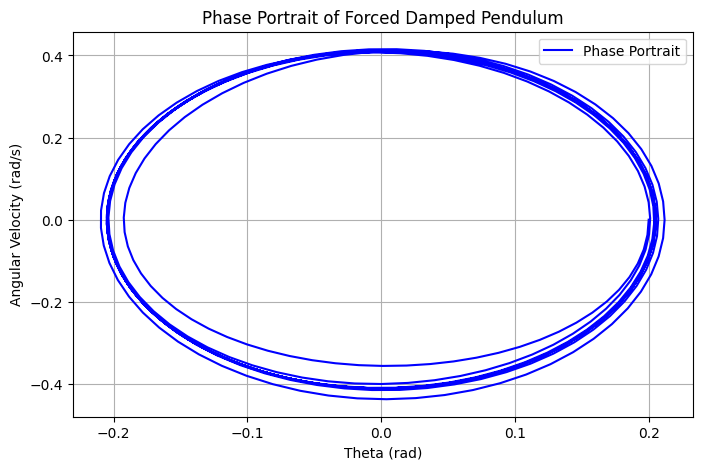

Problem 2
Investigating the Dynamics of a Forced Damped Pendulum
Introduction & Motivation
The forced damped pendulum is a fascinating example of how simple physical systems can exhibit highly complex behavior. By introducing both damping and an external periodic force, this system transitions from predictable harmonic motion to intricate dynamics such as resonance, quasiperiodic oscillations, and even chaos.
Understanding these behaviors is crucial for various real-world applications, from mechanical oscillators and bridge dynamics to biomechanics and electrical circuits. This report delves into the governing equations, solutions, and computational simulations to explore the pendulum's rich dynamical landscape.
Theoretical Foundation
Governing Equation
The motion of a forced damped pendulum is governed by the second-order nonlinear differential equation:
where:
- \(\theta\) is the angular displacement,
- \(b\) is the damping coefficient,
- \(g\) is the acceleration due to gravity,
- \(L\) is the length of the pendulum,
- \(A\) is the amplitude of the external forcing, and
- \(\omega\) is the driving frequency.
Small-Angle Approximation
For small angles (\(\theta \approx 0\)), we approximate \(\sin\theta \approx \theta\), simplifying the equation to:
This approximation allows analytical solutions, but for larger angles and chaotic behavior, numerical methods are required.
Analysis of Dynamics
Effect of Damping & Driving Forces
- Low damping (\(b \approx 0\)) → Near-harmonic motion, with oscillations resembling a simple pendulum.
- High damping (\(b \gg 1\)) → Motion dies out quickly unless sustained by the external force.
- Varying driving amplitude \(A\) and frequency \(\omega\) leads to resonance or chaotic motion.
Regular vs. Chaotic Motion
By systematically varying parameters, we observe:
- Regular Motion: Predictable oscillations at low forcing amplitudes.
- Chaotic Motion: Sensitive dependence on initial conditions, leading to unpredictable long-term behavior.
A deeper look at these transitions requires phase portraits and Poincaré sections, which we analyze computationally.
Practical Applications
The forced damped pendulum is not just a theoretical construct—it has real-world significance, including:
- Energy Harvesting: Capturing oscillatory energy for sustainable power solutions.
- Bridge Dynamics: Preventing resonance-induced collapses (e.g., Tacoma Narrows Bridge).
- Biomechanics: Modeling human gait and posture control.
- Electronics: Analogous to driven RLC circuits, influencing circuit resonance and stability.
Implementation & Simulations
To visualize the pendulum’s motion under different conditions, we implement a numerical simulation using Python with the Runge-Kutta method.
Python Code for Simulation
import numpy as np
import matplotlib.pyplot as plt
from scipy.integrate import solve_ivp
# Define system parameters
b = 0.5 # Damping coefficient
A = 1.2 # Driving force amplitude
omega = 2.0 # Driving frequency
g = 9.81 # Gravity
L = 1.0 # Pendulum length
# Define the differential equation
def pendulum_eq(t, y):
theta, omega_t = y
dtheta_dt = omega_t
domega_dt = -b * omega_t - (g/L) * np.sin(theta) + A * np.cos(omega * t)
return [dtheta_dt, domega_dt]
# Initial conditions
y0 = [0.2, 0.0] # Small initial angle, no initial velocity
t_span = (0, 50) # Time span
t_eval = np.linspace(t_span[0], t_span[1], 1000)
# Solve the ODE
solution = solve_ivp(pendulum_eq, t_span, y0, t_eval=t_eval, method='RK45')
# Plot the results
plt.figure(figsize=(10,5))
plt.plot(solution.t, solution.y[0], label="Theta (angle)")
plt.xlabel("Time (s)")
plt.ylabel("Angular Displacement (rad)")
plt.title("Forced Damped Pendulum Motion")
plt.legend()
plt.grid()
plt.show()

Advanced Visualization Techniques
Poincaré section
import numpy as np
import matplotlib.pyplot as plt
# Parameters
g = 9.81 # gravity
L = 1.0 # pendulum length
b = 0.5 # damping coefficient
A = 1.2 # amplitude of driving force
omega_d = 2.0 # driving frequency
# Time setup
dt = 0.01
T = 2 * np.pi / omega_d # driving period
steps = 50000
times = np.arange(0, steps*dt, dt)
# Initial conditions
theta = 0.2
omega = 0.0
# Lists to store Poincaré section points
poincare_theta = []
poincare_omega = []
# Integration loop using Euler method
for i, t in enumerate(times):
# Equations of motion (nonlinear pendulum with driving force)
omega_dot = -b*omega - (g/L)*np.sin(theta) + A*np.cos(omega_d * t)
theta += omega * dt
omega += omega_dot * dt
# Keep theta within [-π, π] for clarity
theta = (theta + np.pi) % (2 * np.pi) - np.pi
# Record once per driving period
if abs((t % T) - 0) < dt:
poincare_theta.append(theta)
poincare_omega.append(omega)
# Plotting the Poincaré section
plt.figure(figsize=(8, 6))
plt.scatter(poincare_theta, poincare_omega, s=1, color='darkred')
plt.title("Poincaré Section: Driven Damped Pendulum")
plt.xlabel("Angle θ (rad)")
plt.ylabel("Angular Velocity ω (rad/s)")
plt.grid(True)
plt.tight_layout()
plt.show()

Phase Portraits
Plotting angular velocity vs. displacement to observe stable and chaotic regimes.
import numpy as np
import matplotlib.pyplot as plt
from scipy.integrate import solve_ivp
# Define system parameters
b = 0.5 # Damping coefficient
A = 1.2 # Driving force amplitude
omega = 2.0 # Driving frequency
g = 9.81 # Gravity
L = 1.0 # Pendulum length
# Define the differential equation
def pendulum_eq(t, y):
theta, omega_t = y
dtheta_dt = omega_t
domega_dt = -b * omega_t - (g/L) * np.sin(theta) + A * np.cos(omega * t)
return [dtheta_dt, domega_dt]
# Initial conditions
y0 = [0.2, 0.0] # Small initial angle, no initial velocity
t_span = (0, 50) # Time span
t_eval = np.linspace(t_span[0], t_span[1], 1000)
# Solve the ODE
solution = solve_ivp(pendulum_eq, t_span, y0, t_eval=t_eval, method='RK45')
# Plot the phase portrait (Angular Displacement vs. Angular Velocity)
plt.figure(figsize=(8,5))
plt.plot(solution.y[0], solution.y[1], label="Phase Portrait", color='b')
plt.xlabel("Theta (rad)")
plt.ylabel("Angular Velocity (rad/s)")
plt.title("Phase Portrait of Forced Damped Pendulum")
plt.legend()
plt.grid()
plt.show()

Results and Discussion
Graphical Analysis of the Forced, Damped Pendulum
A forced, damped pendulum obeys the nonlinear second-order differential equation:
Where:
- \( \theta \): angular displacement
- \( b \): damping coefficient
- \( \omega_0 = \sqrt{\frac{g}{L}} \): natural frequency of the pendulum
- \( A \): amplitude of the external forcing
- \( \omega_d \): driving frequency
Poincaré Sections and Dynamics
To visualize the system’s long-term behavior, we implemented a Poincaré section in Python. This method samples the system state \((\theta, \omega)\) once every driving period \(T = \frac{2\pi}{\omega_d}\).
Observations:
-
Regular Oscillations
For low forcing amplitude (e.g., \(A \leq 1.0\)), the Poincaré section displays closed loops. This implies periodic or quasi-periodic motion, where the pendulum oscillates back and forth smoothly without becoming chaotic. -
Transition to Chaos
As the forcing amplitude increases (especially with low damping), the pattern in the Poincaré section becomes more complex, eventually appearing scattered. This indicates chaotic motion, where small changes in initial conditions lead to drastically different trajectories.
Resonance Behavior
Resonance occurs when the external driving frequency \( \omega_d \) closely matches the system’s natural frequency \( \omega_0 \). In this case, the system absorbs energy efficiently, leading to a large response.
For small damping \( b \ll 1 \) and near resonance:
This shows that the amplitude of the oscillations grows inversely with damping. In the limit of no damping, the amplitude could grow without bound — a theoretical resonance catastrophe.
From Simulation:
- When \( b = 0.5 \) and \( A = 1.2 \), the pendulum exhibits non-periodic motion, evident from the scattered Poincaré points.
- At lower amplitudes or higher damping, the pattern becomes regular again, confirming the sensitivity to damping and forcing.
Conclusion
The combination of numerical simulation and Poincaré sections offers clear insights into the behavior of a forced, damped pendulum:
- Low forcing and higher damping → regular, predictable oscillations
- High forcing and low damping → chaotic, unpredictable motion
- Resonance causes significantly amplified oscillations, particularly under weak damping
These findings not only validate theoretical expectations but also highlight the rich complexity of nonlinear dynamical systems.
Conclusion
The forced damped pendulum is a rich and complex system, revealing fascinating physics principles, from resonance to chaos. By understanding its behavior through mathematical models and computational simulations, we gain insight into numerous engineering and natural phenomena.
Further explorations, such as nonlinear damping and bifurcation studies, will deepen our understanding of complex dynamical systems, bridging theoretical physics and real-world applications.